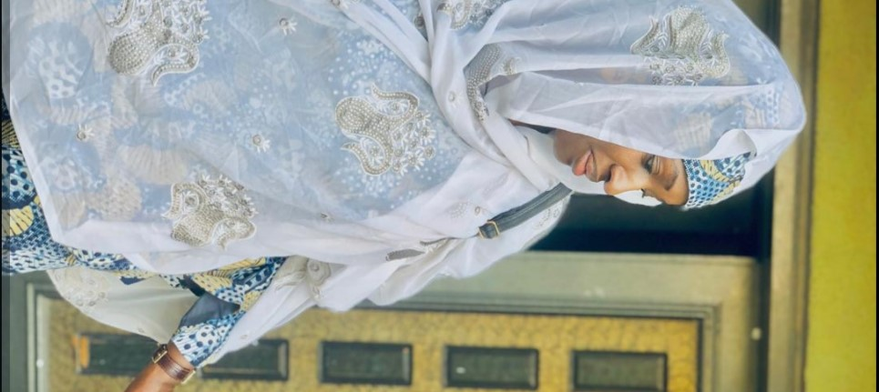

Choosing just a few role models is no easy task, as I have been blessed with the guidance and inspiration of many remarkable individuals. However, if I had to narrow it down to three, these would stand out above all.
First and foremost is the Prophet Muhammad (Sallallahu Alaihi Wasallam). He is my all-time favourite role model. In every aspect of his life—his character, patience, compassion, strength, humility—he exemplifies what it means to live with purpose and integrity. MashaAllah, he truly is a model for all of humanity.
The second is Shaykh Omar Suleiman. At one of the lowest points in my life, when my faith was wavering and I was close to giving up on myself, I came across one of his lectures. That moment was transformative. His words struck a chord deep within me and rekindled my connection to my faith. Even now, whenever he speaks, I find myself drawn in. His ability to speak to the soul continues to uplift and guide me.
Lastly, and most dearly, my mother. Words fail to capture just how amazing she is. Yes, many say their mothers are the best—but I truly believe mine is extraordinary. She is the strongest, most selfless, and patient woman I have ever known. Her heart is pure gold. She taught me that there is strength in crying, and that vulnerability is not a weakness, but a rare kind of courage. I love her deeply and aspire every day to make her proud
